¿Cómo usar Dropbox?
-
Regístrate en Dropbox,
es gratuito
-
Cuando tu cuenta esté hecha,
crea una aplicación
-
Selecciona esta API
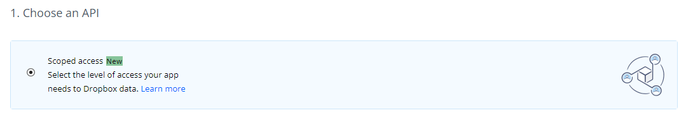
-
Selecciona la opción de una carpeta para tu app
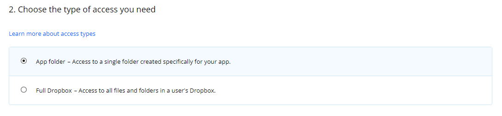
-
Pon este nombre a tu app, reemplazando la primera parte por tu usario
de GitHub
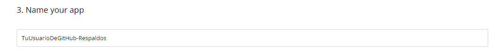
- Acepta los términos y condiciones y crea tu app
-
Dirígete a la pestaña de permisos
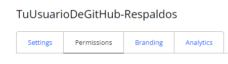
-
Activa estos 2 permisos (files.content.x) y dale a "Submit"
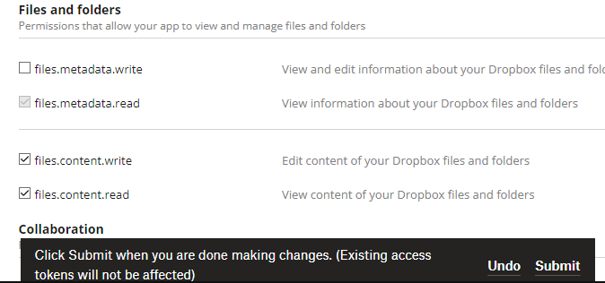
-
Navega a la pestaña de ajustes
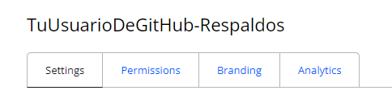
-
Desplázate hacia abajo y genera tu token

-
Tus respaldos podrás encontrarlos en la página principal de Dropbox
¡Todo listo, pon ese token en el lugar que te solicitan!
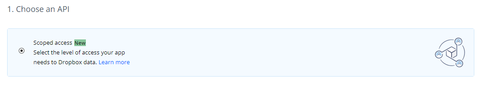
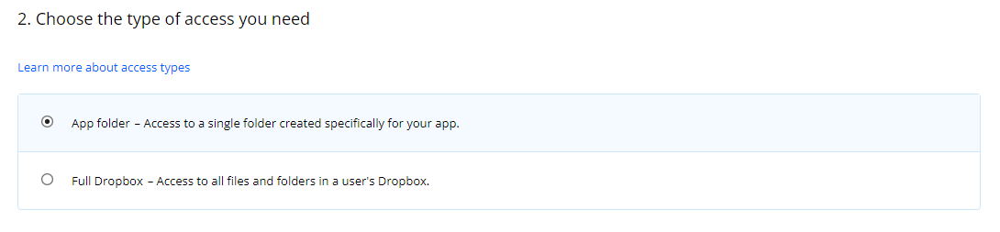
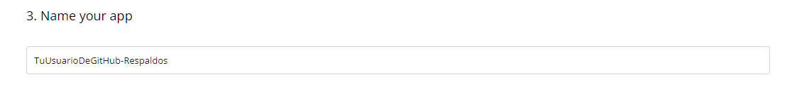
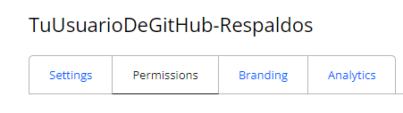
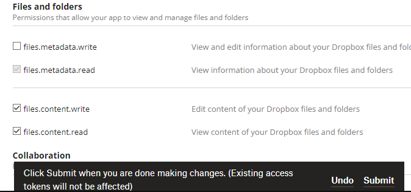
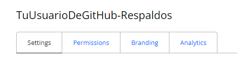